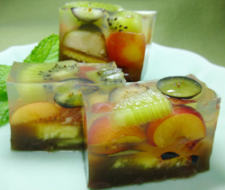

フルーツ寒天ゼリー
- 調理時間：20 分
（冷やし固める時間は除く） - （一人当たり）
- カロリー：88kcal
- たんぱく質：1.9g
- 脂質：0.2g
- 塩分：0g


＜４人分＞
- キウイフルーツ
- 1個
- パインアップル
- 100g
- いちじく
- 1個
- ブルーベリー
- 1/4パック
- さくらんぼ
- 10粒
- 小豆（あん）
- 50gくらい
- 粉寒天
- 2g
- 水
- 200～250cc
- 砂糖
- 大さじ1～2
- レモン汁
- 少々


- 季節のフルーツは各々、食べやすい大きさに切る。
- 鍋に水と粉寒天をを入れて一旦、沸騰させ、弱火にして１分くらい煮溶かす。
砂糖を加えて溶かす。火を止めてからレモン汁を加える。 - 型に小豆あん、カットしたフルーツの順に入れ、②の寒天液を流しいれ、冷蔵庫で冷やし固める。
- 型から取り出して切り分ける。
フルーツ寒天ゼリー
日差しが強くなり、気温も上がり、陽気がもっとも盛んな季節の到来です。中医学では、この咲き栄える季節を「陽気旺盛」という言葉で表します。８月は暑さや発汗に体力を消耗されやすく、また夜の寝苦しさから日々の不眠に注意が必要です。
さて、今回使用した「寒天」は、体内の陽気を程よく発散させ、夏の暑さから身体を守るおすすめの食材です。
寒天は天草という海藻で、食物繊維を多く含みます。食物繊維は、人間の消化酵素では消化できない難消化性成分の総称。腸内で老廃物や水分を吸収し、便として排泄するはたらきがあります。ガブガブと水分を摂りすぎてしまう方も、寒天ゼリーのように食事やデザートからの水分摂取がよいでしょう。老廃物をデトックスして、水分代謝をよくすることで、むくみも解消。夏バテでだるいときこそ胃腸をいたわりながら、よく噛んで食べ、元気に夏を過ごしましょう。